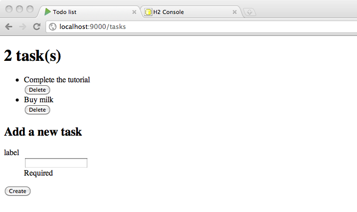

Developing the app - Persisting the data
Now we have a Task model, its time to persist the tasks in a database to make the application useful. Lets start by enabling a database in our application. In the conf/application.conf file, add:
db.default.driver=org.h2.Driver
db.default.url="jdbc:h2:mem:play"
For now we will use a simple in memory database using H2. No need to restart the server, refreshing the browser is enough to set up the database.
We will use EBean (the default Object Relational Model tool for Play framework) in this tutorial to query the database. So you’ll have to enable it in the conf/application.conf file as well:
ebean.default="models.*"
By doing this we create an Ebean server connected to the default datasource, managing all entities found in the models package. Now it’s time to transform our Task class to a valid EBean entity:
package models;
import java.util.*;
import play.db.ebean.*;
import play.data.validation.Constraints.*;
import javax.persistence.*;
@Entity
public class Task extends Model {
@Id
public Long id;
@Required
public String label;
public static Finder<Long,Task> find = new Finder(
Long.class, Task.class
);
...
We made the Task class extend the play.db.ebean.Model super class to have access to Play built-in Ebean helper. We also added proper persistence annotations, and created a find helper to initiate queries.
Lets implement the CRUD operations:
public static List<Task> all() {
return find.all();
}
public static void create(Task task) {
task.save();
}
public static void delete(Long id) {
find.ref(id).delete();
}
Setting up the H2 database
In conf/application.conf uncomment out the following lines
# Database configuration
# ~~~~~
# You can declare as many datasources as you want.
# By convention, the default datasource is named `default`
#
db.default.driver=org.h2.Driver
db.default.url="jdbc:h2:mem:play"
# db.default.user=sa
# db.default.password=""
#
Once you save the changes to your file and refresh the browser, the development environment will now generate a script and populate the database with a table to store your tasks.
You can see this script in conf/evolutions/default/1.sql
Now you can play again with the application, creating new tasks should work.
Note: In the production environment, like the one you deploy on Heroku, the evolutions database script will not ru (running scripts could over-write production data, so its off by default). To run the database script in your Heroku environment you need to add the options
-DapplyEvolutions.default=true
From Heroku Logs:
2013-10-11T16:34:01.655942+00:00 heroku[web.1]: Starting process with command `target/universal/stage/bin/play-todo-postgres -Dhttp.port=23040`
2013-10-11T16:34:02.777595+00:00 app[web.1]: Picked up JAVA_TOOL_OPTIONS: -Djava.rmi.server.useCodebaseOnly=true
2013-10-11T16:34:03.417940+00:00 app[web.1]: Play server process ID is 2
2013-10-11T16:34:05.255570+00:00 app[web.1]: [info] play - database [default] connected at jdbc:h2:mem:play
2013-10-11T16:34:05.981008+00:00 app[web.1]: label varchar(255),
2013-10-11T16:34:05.981008+00:00 app[web.1]: [warn] play - Your production database [default] needs evolutions!
2013-10-11T16:34:05.981008+00:00 app[web.1]: # --- Rev:1,Ups - 2af6baa
2013-10-11T16:34:05.981008+00:00 app[web.1]: create table task (
2013-10-11T16:34:05.981008+00:00 app[web.1]: id bigint not null,
2013-10-11T16:34:05.981008+00:00 app[web.1]: constraint pk_task primary key (id))
2013-10-11T16:34:05.981008+00:00 app[web.1]: ;
2013-10-11T16:34:05.981008+00:00 app[web.1]:
2013-10-11T16:34:05.981008+00:00 app[web.1]: create sequence task_seq;
2013-10-11T16:34:05.981008+00:00 app[web.1]:
2013-10-11T16:34:05.982385+00:00 app[web.1]: [warn] play - Run with -DapplyEvolutions.default=true if you want to run them automatically (be careful)
2013-10-11T16:34:05.985048+00:00 app[web.1]: Oops, cannot start the server.
2013-10-11T16:34:05.985048+00:00 app[web.1]: @6g034o2jb: Database 'default' needs evolution!
2013-10-11T16:34:05.985410+00:00 app[web.1]: at play.api.db.evolutions.EvolutionsPlugin$$anonfun$onStart$1$$anonfun$apply$1.apply$mcV$sp(Evolutions.scala:484)
Running the Database Script to create the table in H2 on Heroku
Create a text file called Procfile. This file should not have any file extension.
Edit the Procfile and add the following line to define how the app is run, along with the database script to create the table
web: target/universal/stage/bin/play-todo-postgres -Dhttp.port=$PORT -DapplyEvolutions.default=true

Read more about the Ebean Object Relational Mapper in Play framework.
Deleting tasks
Now that we can create tasks, we need to be able to delete them. Very simple, we just need to finish the implementation of the deleteTask action:
public static Result deleteTask(Long id) {
Task.delete(id);
return redirect(routes.Application.tasks());
}
Now you should be able to delete your tasks as well as add them.
Commit your changes locally and deploy
Again as we have made a significant change to the web app functionality, even though its not complete, we should commit those changes to Git.
Add these changes to your local git repository as follows:
git add .
git commit -m "added Task model, forms and page"
Push this commit to Heroku to deploy the new version of the code using the command
git push heroku master
Reload your browser to check the live website has been updated, or use the command heroku open